# @title 1.1 Install the libraries
# @markdown Run this cell only if using Google Colab
%pip -q install \
rasterio \
seaborn \
xlsxwriter \
matplotlib-scalebar \
matplotlib-map-utilsQuantity, Exchange, Shift, and Trajectories (QUEST)

Author: Robert Gilmore Pontius Jr, Antonio Fonseca
Institution: Clark University
Email: antfonseca@clarku.edu
Version: 3.1.0
This notebook analyzes a time series of classified raster maps and summarizes how each class’s size, location, and trajectory change over time. It follows the QUEST framework of Quantity, Exchange, and Shift components of change.
Fill in Section 2 with your data, then run the remaining cells in order. Each section below explains what it computes and how to read the results.
What the notebook computes
Class size over time shows how many pixels of each class exist at every time point, and how that size changes from the first year to the last year.
Number of changes counts, pixel by pixel, how many times each location changed class across the whole time series. It is summarized per time interval, as an overall total, as a percentage of the study area, and as a map.
Trajectories classify every pixel into one of five patterns: stable, stable with alternation, direct extent change, extent change with alternation, or extent change with no direct transition. It is summarized per time interval, as an overall total, as a percentage of the study area, and as a map.
Change components decompose every transition into Quantity, Exchange, and Shift, following Pontius’s framework. They are summarized as transition matrices, heatmaps, stacked charts per interval and overall, by class, and as extent, alternation exchange, and alternation shift maps.
Generated Outputs
Results are written to the OUTPUT_PATH folder you set in Section 2.
| Folder | Contents | Produced in |
|---|---|---|
tables/ |
CSV files with the numbers behind every chart: class sizes, number of changes summaries, trajectory summaries, and transition matrices | Section 4 |
charts/ |
PNG stacked bar charts and heatmaps summarizing size, changes, trajectories, and change components | Section 5 |
rasters/ |
GeoTIFF maps for trajectory, number of changes, extent, alternation exchange, and alternation shift, one value per pixel, for use in GIS software | Section 4 |
maps/ |
PNG previews of the raster maps, ready to view or use in a report | Section 5 |
Need the raw numbers? Check tables/. Need figures for a report? Use charts/ and maps/. Need to overlay results with other layers in QGIS or ArcGIS? Use the GeoTIFFs in rasters/.
How this notebook is organized
- Environment Setup. Install libraries, import modules, and mount Google Drive if you are using Colab.
- User Input. The only section you normally need to edit: input and output paths, years, file naming, no data value, and class definitions.
- Shared Functions. The processing engine, meaning the kernels, workers, and plot templates. Nothing runs here. It only defines the building blocks used below.
- Data Processing. Runs the engine over your rasters and writes every CSV and GeoTIFF output.
- Plots and Maps. Reads the outputs from Section 4 and renders every chart, heatmap, and map.
Sections 3 to 5 use default settings that work for most cases. Only change them if you intentionally want to customize a specific calculation, plot, or map.
Provide input raster maps in the format {prefix}{year}{suffix}, for example PIE_C2_V11_1990.tif, with one file per year. All files must share the same spatial grid: same width, height, CRS, extent, and resolution.
1. Environment Setup
# @title 1.2 Importing libraries
# Standard library
import glob
import os
import re
import pickle
import sys
import time
import math
from pathlib import Path
import threading
from contextlib import ExitStack
from concurrent.futures import ThreadPoolExecutor, as_completed
# Typing for annotations
from typing import Dict, List, Optional, Iterable, Tuple
from IPython.display import display, Markdown
# Third-party
import numba as nb
import numpy as np
import pandas as pd
import rasterio
import xlsxwriter
import matplotlib.pyplot as plt
import matplotlib.image as mpimg
import matplotlib.colors as mcolors
import matplotlib.ticker as ticker
import matplotlib.ticker as mticker
from numba import prange
from pyproj import Transformer
from pyproj import CRS, Geod, Transformer
from tqdm import tqdm
from sklearn.metrics import confusion_matrix
# Rasterio submodules
from rasterio.plot import show
from rasterio.mask import mask
from rasterio.enums import Resampling
from rasterio.transform import from_origin
# Matplotlib extensions
from matplotlib.ticker import FuncFormatter
from matplotlib_scalebar.scalebar import ScaleBar
from matplotlib_map_utils import north_arrow
from matplotlib.colors import LinearSegmentedColormap
from matplotlib.colors import (
ListedColormap,
BoundaryNorm,
Normalize,
LinearSegmentedColormap,
)
from matplotlib.patches import Patch, Rectangle, FancyArrowPatch# @title 1.3 Mounting Google Drive
# @markdown Run this cell only if using Google Colab
from google.colab import drive
drive.mount("/content/drive")Drive already mounted at /content/drive; to attempt to forcibly remount, call drive.mount("/content/drive", force_remount=True).2. User Input
Fill in the cell below with your data. No programming knowledge is needed. Just replace the values between the quotes.
What you need
- A folder of raster maps, one single band GeoTIFF per time point.
- A consistent file name pattern:
{PREFIX}{YEAR}{SUFFIX}. For example, prefixPIE_C2_V11_, year1990, and suffix.tifproducePIE_C2_V11_1990.tif. You set the prefix, suffix, and list of years below. The notebook builds the expected file names from them and, when you run the cell, checks immediately that every file exists, listing anything missing before any processing starts. - An output folder where tables, charts, rasters, and maps will be written. It is created automatically if it does not exist.
Requirements for the rasters themselves
- Identical pixel grid across every file: same width, height, CRS, extent, and resolution. If the grids do not line up pixel for pixel, the analysis will be wrong without any warning.
- Single band. Only band 1 of each file is read.
- Integer class codes, with one consistent no data value across every file marking invalid or masked pixels.
Class definitions
The cell right after also defines class_labels_dict: the class IDs found in your rasters, their display names, and the colors used in charts and maps. This is a plain Python dictionary, so it needs to be edited with the same syntax already in the cell. Add, remove, or rename entries to match your own classification scheme.
# @title 2.1 Configure Your App { display-mode: "form" }
# @markdown ### 📂 Path Settings
# @markdown Folder containing the input raster maps (one file per year):
INPUT_FOLDER_PATH = "/content/drive/MyDrive/Events/2026CGA/workshop/dataset/vcr" #@param {type:"string"}
# @markdown Output folder for tables, charts, rasters, and maps:
OUTPUT_PATH = "/content/drive/MyDrive/Events/2026CGA/workshop/dataset/quest_output_2" #@param {type:"string"}
# @markdown ### 🗓️ Time Range
# @markdown Comma-separated years, or a Python range expression, in chronological order:
YEARS = "1990, 2000, 2010, 2020" #@param {type:"string"}
# @markdown ### 🏷️ File Names
# @markdown Example: prefix "PIE_C2_V11_" + year 1990 + suffix ".tif" -> "PIE_C2_V11_1990.tif"
FILE_PREFIX = "" #@param {type:"string"}
FILE_SUFFIX = ".tif" #@param {type:"string"}
# @markdown ### 🧭 Raster Settings
# @markdown Pixel value marking invalid / masked data:
NO_DATA_VALUE = 255 #@param {type:"integer"}
# 1. Parse the years into a plain list, in chronological order.
# Handles three cases: a "range(a, b)" string (what Colab's string-typed
# form field produces when the box literally contains a range() call), a
# comma-separated string of years, and a real range or list object.
years_input = str(YEARS).strip()
if years_input.startswith("range(") and years_input.endswith(")"):
range_args = [
int(part.strip())
for part in years_input[len("range("):-1].split(",")
]
years = list(range(*range_args))
elif isinstance(YEARS, str):
years = [
int(year.strip())
for year in YEARS.split(",")
if year.strip()
]
else:
years = [int(year) for year in YEARS]
if not years:
raise ValueError("Please provide at least one year in YEARS.")
if years != sorted(set(years)):
raise ValueError("YEARS must be unique and in chronological order.")
# 2. Build the paths consumed by every cell below.
image_paths = [
os.path.join(INPUT_FOLDER_PATH, f"{FILE_PREFIX}{year}{FILE_SUFFIX}")
for year in years
]
output_path = OUTPUT_PATH
noData_value = NO_DATA_VALUE
# 3. Validate the input folder and every expected file immediately.
if not os.path.exists(INPUT_FOLDER_PATH):
raise FileNotFoundError(f"Input folder not found: {INPUT_FOLDER_PATH}")
missing_files = [path for path in image_paths if not os.path.exists(path)]
if missing_files:
print("Missing raster maps:")
for path in missing_files:
print(f" - {path}")
else:
print(f"All {len(image_paths)} raster maps found.")
# 4. Create the output folder if it does not exist yet.
if not os.path.exists(output_path):
os.makedirs(output_path)
print("Output folder created:", output_path)
else:
print("Output folder already exists:", output_path)All 4 raster maps found.
Output folder already exists: /content/drive/MyDrive/Events/2026CGA/workshop/dataset/quest_output_2# @title 2.2 Class Definitions
# Class ID, names, and colors
class_labels_dict = {
1: {"name": "Trees", "color": "#035f1f"},
2: {"name": "Marsh", "color": "#7FA35C"},
3: {"name": "Beach", "color": "#E8C87A"},
4: {"name": "Water", "color": "#3182bd"}
}
# Sorted list of renamed class labels
class_labels = [class_labels_dict[key]["name"] for key in sorted(class_labels_dict.keys())]4. Data Processing
This section runs the functions defined in Section 3 over your rasters and writes every CSV table and GeoTIFF raster to OUTPUT_PATH. Section 4.1 is the main step. It reads every input raster exactly once and computes almost everything else in the notebook. The remaining cells compute a handful of extra tables.
Nothing here draws a chart or a map. That happens in Section 5.
4.1 Main single-pass computation
# @title 4.1 Run the single-pass computation over all input rasters
tables_dir = os.path.join(output_path, "tables")
os.makedirs(tables_dir, exist_ok=True)
interval_labels = [
f"{years[i]}-{years[i + 1]}" for i in range(len(years) - 1)
]
# 1. Run the single-pass computation over every input raster block
quest_results = compute_all_quest_outputs(
image_paths=image_paths,
output_dir=output_path,
years=years,
class_dict=class_labels_dict,
nodata_val=noData_value,
)
out_maps = {
"extent": quest_results["out_raster_paths"]["extent"],
"exchange": quest_results["out_raster_paths"]["exchange"],
"shift": quest_results["out_raster_paths"]["shift"],
}
trajectory_file = quest_results["out_raster_paths"]["trajectory"]
# 2. Build the number-of-changes-per-interval table (Section 5.1)
raw_counts = quest_results["raw_change_counts"]
max_changes_observed = 0
if np.any(raw_counts > 0):
col_sums = raw_counts.sum(axis=0)
if np.any(col_sums > 0):
max_changes_observed = np.max(np.nonzero(col_sums))
relevant_counts = raw_counts[:, :max_changes_observed + 1]
column_names = [str(i + 1) for i in range(relevant_counts.shape[1])]
df_change_freq = pd.DataFrame(
relevant_counts,
index=interval_labels,
columns=column_names,
)
df_change_freq.to_csv(
os.path.join(tables_dir, "number_change_per_interval.csv"),
)
# 3. Build the trajectory-contributions-per-interval table (Section 6.2)
raw_traj_counts = quest_results["raw_trajectory_intervals"]
relevant_traj_counts = raw_traj_counts[:, 2:6]
df_trajectory_intervals = pd.DataFrame(
relevant_traj_counts,
index=interval_labels,
columns=[2, 3, 4, 5],
)
df_trajectory_intervals.index.name = "Interval"
df_trajectory_intervals.columns.name = "Trajectory_Class"
df_trajectory_intervals.to_csv(
os.path.join(tables_dir, "trajectory_contributions_per_interval.csv"),
)
# 4. Build the interval transition matrices (Section 7.1)
class_ids = quest_results["class_ids"]
global_interval_matrices = quest_results["global_interval_matrices"]
interval_matrices = {}
for t, interval_name in enumerate(interval_labels):
df_mat = pd.DataFrame(
global_interval_matrices[t],
index=class_ids,
columns=class_ids,
)
df_mat.to_csv(
os.path.join(tables_dir, f"transition_matrix_{interval_name}.csv"),
)
interval_matrices[interval_name] = df_mat
all_classes_list = class_ids
all_classes = np.array(all_classes_list)
n = len(all_classes)
class_to_idx = {cls: i for i, cls in enumerate(all_classes)}
# 5. Build the overall change component matrices (Section 7.2)
mat_sum = quest_results["mat_sum"]
mat_ext = quest_results["mat_ext"]
mat_x = quest_results["mat_x"]
mat_s = quest_results["mat_s"]
mat_u = quest_results["mat_u"]
mat_c = np.minimum(mat_ext, mat_ext.T)
mat_q = mat_ext - mat_c
with np.errstate(divide="ignore", invalid="ignore"):
mat_ratio = np.where(
mat_ext != 0,
(mat_u / mat_ext) * 100.0,
np.nan,
)
interval_str = f"{years[0]}-{years[-1]}"
aggregated_matrices = {
"time_intervals": mat_sum,
"extent": mat_ext,
"allocation_exchange": mat_c,
"quantity_allocation_shift": mat_q,
"alternation_exchange": mat_x,
"alternation_shift": mat_s,
"indirect_extent": mat_u,
"indirect_ratio": mat_ratio,
}
for name, mat in aggregated_matrices.items():
df_matrix = pd.DataFrame(mat, index=class_ids, columns=class_ids)
df_matrix.to_csv(
os.path.join(tables_dir, f"transition_matrix_{name}_{interval_str}.csv"),
)
# 6. Build the transition matrices split by trajectory, Pontius's
# "additional budget", which should sum exactly to the Time Intervals
# matrix from step 5
mat_by_trajectory = quest_results["mat_by_trajectory"]
trajectory_matrices = {}
for traj in range(1, 6):
df_traj_mat = pd.DataFrame(
mat_by_trajectory[traj - 1],
index=class_ids,
columns=class_ids,
)
df_traj_mat.to_csv(
os.path.join(
tables_dir,
f"transition_matrix_trajectory_{traj}_{interval_str}.csv",
),
)
trajectory_matrices[traj] = df_traj_mat
# 7. Verify the trajectory budget sums exactly to the Time Intervals
# matrix. Only reported if it fails, since a pass is an internal
# accounting check with nothing for the user to act on.
trajectory_sum_check = sum(mat_by_trajectory[t] for t in range(5))
if not np.array_equal(trajectory_sum_check, mat_sum):
print(
"WARNING: The 5 trajectory matrices do not sum to the Time "
"Intervals matrix. Check the trajectory accounting."
)Computing all quest outputs across 1480 chunks, reading each block once...Processing chunks: 100%|██████████| 1480/1480 [00:11<00:00, 123.98it/s]4.2 Class size at time points
# @title 4.2 Execute class area computation
# 7. Execute the function
df_result = process_and_save_pixel_counts_csv(
image_paths=image_paths,
years=years,
class_labels_dict=class_labels_dict,
output_dir=output_path,
no_data_value=noData_value,
)4.3 Number of changes
# @title 4.3.1 Execute default number of changes overall computation
# Execute the function
df_change_overall = compute_number_change_overall(
output_dir=output_path,
)
if df_change_overall is not None:
display(
df_change_overall,
)# @title 4.3.2 Execute optional percentage of study area with change computation
# Execution
tables_dir = os.path.join(
output_path,
"tables",
)
csv_input_path = os.path.join(
tables_dir,
"number_change_per_interval.csv",
)
if os.path.exists(
csv_input_path,
):
df_loaded_freq = pd.read_csv(
csv_input_path,
index_col=0,
)
df_distribution = compute_percentage_of_study_area_with_change_csv(
df_intervals=df_loaded_freq,
image_paths=image_paths,
nodata_val=noData_value,
output_dir=output_path,
)
display(
df_distribution,
)
else:
print(
f"Error: Could not find the CSV file at {csv_input_path}. Please run the previous calculation cells.",
)# @title 4.3.3 Execute optional location of changes computation
# Execution
tables_dir = os.path.join(
output_path,
"tables",
)
csv_input_path = os.path.join(
tables_dir,
"number_change_per_interval.csv",
)
if os.path.exists(
csv_input_path,
):
df_loaded_freq = pd.read_csv(
csv_input_path,
index_col=0,
)
df_distribution = compute_number_of_changes_location_csv(
df_intervals=df_loaded_freq,
output_dir=output_path,
)
display(
df_distribution,
)
else:
print(
f"Error: Could not find the CSV file at {csv_input_path}.",
)4.4 Trajectories
# @title 4.4.1 Execute default trajectory overall computation
# 7. Execute the function
df_traj_total_changes = compute_total_changes_per_trajectory(
output_dir=output_path,
)
if df_traj_total_changes is not None:
display(
df_traj_total_changes,
)# @title 4.4.2 Execute optional percentage of study area with trajectories computation
# Execution
df_trajectory_percentage = compute_trajectory_percentage_csv(
output_path=output_path,
)
if df_trajectory_percentage is not None:
display(
df_trajectory_percentage,
)# @title 4.4.3 Execute optional location of trajectories computation
# Execution
df_trajectory_location = compute_trajectory_location_csv(
output_path=output_path,
)
if df_trajectory_location is not None:
display(
df_trajectory_location,
)4.5 Change components
# @title 4.5.1 Execute change components computation
# Execute main function
main(
output_path=output_path,
)# @title 4.5.2 Heatmap input setup and integrity checks
# Convert years to a list to satisfy the type check
years = list(years)
# 1. Validate global inputs
assert isinstance(
years,
(
list,
tuple,
),
) and len(
years,
) >= 2, "`years` missing or invalid."
assert isinstance(
output_path,
str,
) and output_path, "`output_path` missing or invalid."
assert isinstance(
class_labels_dict,
dict,
) and class_labels_dict, "`class_labels_dict` missing or invalid."
# 3. Define interval string based on years
str_y0 = _extract_year_str(
years[
0
],
)
str_y1 = _extract_year_str(
years[
-1
],
)
interval_str = f"{str_y0}-{str_y1}"# @title 4.5.3 Load and reorder heatmap matrices
# 1. Define matrix metadata dictionary
# Format: {key: [file_suffix, title_part, matrix_type]}
MATRIX_META = {
"all_exc": [
"allocation_exchange",
"Allocation Exchange",
"stock",
],
"qty_shift": [
"quantity_allocation_shift",
"Quantity & Allocation Shift",
"stock",
],
"unacc_ext": [
"indirect_extent",
"Indirect",
"stock",
],
"alt_exc": [
"alternation_exchange",
"Alternation Exchange",
"flow",
],
"alt_shift": [
"alternation_shift",
"Alternation Shift",
"flow",
],
"sum": [
"time_intervals",
"Time Intervals",
"flow",
],
"ext": [
"extent",
"Extent",
"stock",
],
}
# 2. Define tables directory path
tables_dir = os.path.join(
output_path,
"tables",
)
# 3. Load all matrices into a dictionary
matrices = {}
for key, meta in MATRIX_META.items():
csv_path = os.path.join(
tables_dir,
f"transition_matrix_{meta[0]}_{interval_str}.csv",
)
matrices[
key
] = load_square_matrix(
csv_path=csv_path,
)
# 3.1. Load the 5 trajectory matrices (Pontius's additional budget),
# in the same dictionary, so the reorder step in 4 below aligns them
# to the exact same class order as every other matrix.
for traj in range(1, 6):
csv_path = os.path.join(
tables_dir,
f"transition_matrix_trajectory_{traj}_{interval_str}.csv",
)
matrices[f"traj_{traj}"] = load_square_matrix(
csv_path=csv_path,
)
# 4. Reorder all loaded matrices using the sum net change
matrices = reorder_all_matrices(
matrices_dict=matrices,
)
print(
f"Success! {len(matrices)} matrices loaded and reordered.",
)# @title 4.5.4 Execute overall change components computation
# 6. Execute the function
csv_components_path = os.path.join(
output_path,
"tables",
"change_components.csv"
)
export_overall_change_components(
csv_path=csv_components_path,
output_dir=output_path,
)5. Plots and Maps
Every cell here reads a CSV or GeoTIFF already written by Section 4 and renders a chart, heatmap, or map, saving it to charts/ or maps/. Nothing here computes new results. If a plot looks wrong, the fix is almost always in Section 4, not here.
Change plotting or cartographic parameters only if you intentionally want to customize a specific map or chart.
5.1 Time series input maps
# @title 5.1 Execute time series maps plot
# Execute function
plot_input_maps(
class_map=class_labels_dict,
years=years,
output_path=output_path,
image_paths_arg=image_paths,
nodata_val=noData_value,
panel_size=(4.0, 6.0),
)This panel shows the classified land cover map at each of the 4 years from 1990 to 2020, with 4 land cover classes.
5.2 Class size at time points
# @title 5.2 Execute class size plot
# Execute the function by reading the saved CSV
tables_dir = os.path.join(
output_path,
"tables",
)
csv_input_path = os.path.join(
tables_dir,
"pixels_per_class_per_year.csv",
)
# Check if the file exists to avoid errors
if os.path.exists(csv_input_path):
# Load the CSV into a DataFrame, setting 'Year' back as the index
df_loaded = pd.read_csv(
csv_input_path,
index_col="Year",
)
# Generate the plot using the loaded data
plot_pixel_counts_bar_chart(
pivot_pixels=df_loaded,
class_labels_dict=class_labels_dict,
output_dir=output_path,
)
else:
print(
f"Error: Could not find the CSV file at {csv_input_path}. "
"Please run the pixel counting cell first."
)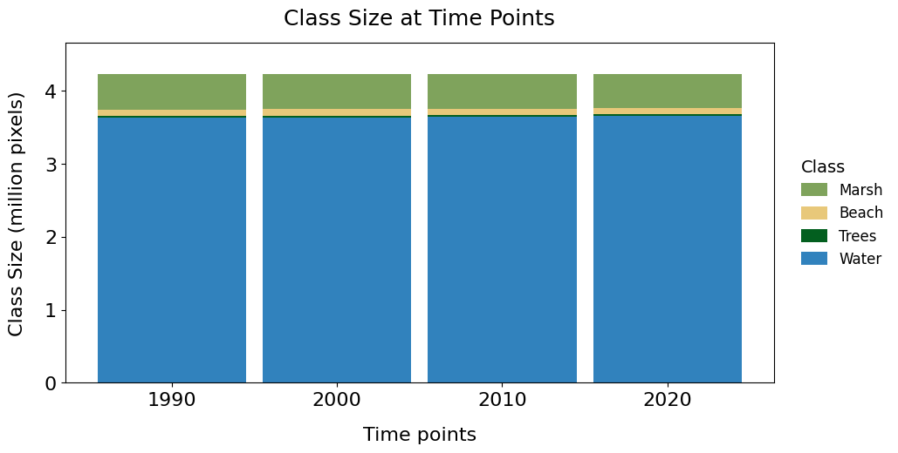
This chart shows the area of each land cover class across 4 years, from 1990 to 2020. Classes are stacked from bottom to top by net change: Water shows the largest gain (+0.0 million pixels) at the bottom, and Marsh shows the largest loss (-0.0 million pixels) at the top.
Chart saved to: /content/drive/MyDrive/Events/2026CGA/workshop/dataset/quest_output_2/charts/chart_class_size_time_points.png5.3 Number of changes
# @title 5.3.1 Execute number of changes during time intervals plot
# Execution by reading the saved CSV
tables_dir = os.path.join(
output_path,
"tables",
)
csv_input_path = os.path.join(
tables_dir,
"number_change_per_interval.csv",
)
# Check if the file exists to avoid errors
if os.path.exists(csv_input_path):
# Load the CSV, setting the first column (intervals) as the index
df_loaded_freq = pd.read_csv(
csv_input_path,
index_col=0,
)
# Generate the plot using the loaded data
plot_number_change_time_interval(
df=df_loaded_freq,
output_path=output_path,
)
else:
print(
f"Error: Could not find the CSV file at {csv_input_path}. "
"Please run the number of changes calculation cell first."
)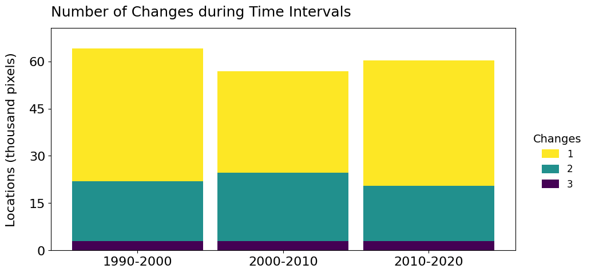
This chart shows the size of change during each of the 3 annual time intervals, segmented by how many changes occurred at each location. A location changes at most once during each time interval. A location is counted as 3 where the location changed 3 times during the 3 time intervals. The time interval 1990-2000 has the most change, with 64.2 thousand pixels.
Chart saved to: /content/drive/MyDrive/Events/2026CGA/workshop/dataset/quest_output_2/charts/chart_number_change_time_interval.png# @title 5.3.2 Plot default number of changes overall
summary = _plot_stacked_overall_bar_chart(
output_dir=output_path,
csv_filename="number_change_overall_summary.csv",
index_col="Changes",
value_col="Pixels",
title="Number of Changes Overall",
legend_title="Changes",
output_png_name="chart_number_changes_pixels_overall_default.png",
color_mode="gradient",
y_axis_mode="pixel_count",
y_label_base="Change",
)
display(
Markdown(
f"*This chart shows the number of changes summed during all "
f"time intervals, grouped by how many times each location "
f"changed. Changes at locations that changed "
f"{summary['top_category']} time are the most common, "
f"totaling {summary['top_value_display']} changes, which is "
f"{summary['top_share']:.1f}% of the "
f"{summary['total_value_display']} overall changes.*"
)
)
print(f"Chart saved to: {summary['out_fig_path']}")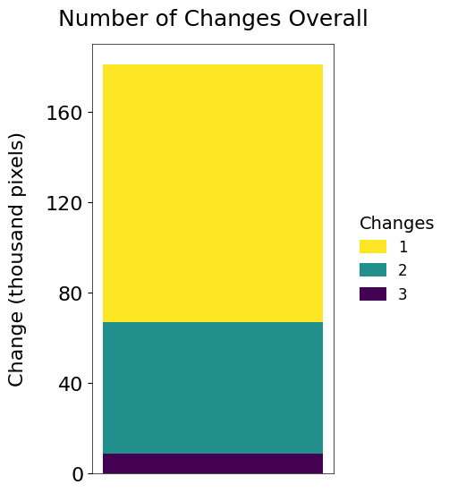
This chart shows the number of changes summed during all time intervals, grouped by how many times each location changed. Changes at locations that changed 1 time are the most common, totaling 114.1 thousand pixels changes, which is 63.0% of the 181.2 thousand pixels overall changes.
Chart saved to: /content/drive/MyDrive/Events/2026CGA/workshop/dataset/quest_output_2/charts/chart_number_changes_pixels_overall_default.png# @title 5.3.3 Plot percentage of study area with change
summary = _plot_stacked_overall_bar_chart(
output_dir=output_path,
csv_filename="percentage_of_study_area_with_change.csv",
key_col="Changes",
value_col="Percentage",
title="Number of Changes Overall",
legend_title="Changes",
output_png_name="chart_number_changes_percentage_overall.png",
color_mode="gradient",
y_axis_mode="percentage",
y_label_fixed="Locations (% of study area)",
)
display(
Markdown(
f"*This chart shows what share of the total study area consists "
f"of locations that changed class a given number of times in "
f"total, counting each location once, not once per time interval "
f"in which it changed. Locations that changed "
f"{summary['top_label']} time(s) are the most common, covering "
f"{summary['top_value_display']} of the study area, "
f"{summary['top_share']:.1f}% of the "
f"{summary['total_value_display']} affected overall.*"
)
)
print(f"Chart saved to: {summary['out_fig_path']}")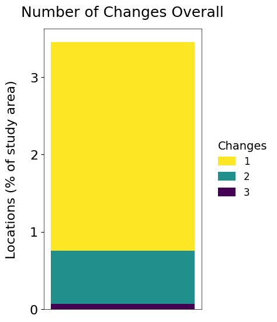
This chart shows what share of the total study area consists of locations that changed class a given number of times in total, counting each location once, not once per time interval in which it changed. Locations that changed 1 time(s) are the most common, covering 2.7% of the study area, 78.1% of the 3.5% affected overall.
Chart saved to: /content/drive/MyDrive/Events/2026CGA/workshop/dataset/quest_output_2/charts/chart_number_changes_percentage_overall.png# @title 5.3.4 Plot location of changes
summary = _plot_stacked_overall_bar_chart(
output_dir=output_path,
csv_filename="number_of_changes_location.csv",
key_col="Changes",
value_col="Unique_Pixels",
title="Number of Changes Overall",
legend_title="Changes",
output_png_name="chart_number_changes_pixels_overall.png",
color_mode="gradient",
y_axis_mode="pixel_count",
y_label_base="Locations",
)
display(
Markdown(
f"*Unlike the Number of Changes Overall chart, which counts "
f"every time a location changed, summing multiple changes from "
f"the same location, this chart counts each distinct location "
f"only once, regardless of how many times it changed. Locations "
f"that changed {summary['top_label']} time(s) are the most "
f"common, totaling {summary['top_value_display']}, "
f"{summary['top_share']:.1f}% of the "
f"{summary['total_value_display']} of distinct locations that "
f"changed.*"
)
)
print(f"Chart saved to: {summary['out_fig_path']}")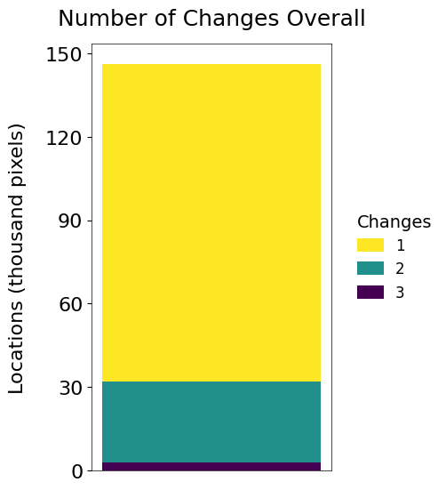
Unlike the Number of Changes Overall chart, which counts every time a location changed, summing multiple changes from the same location, this chart counts each distinct location only once, regardless of how many times it changed. Locations that changed 1 time(s) are the most common, totaling 114.1 thousand pixels, 78.1% of the 146.2 thousand pixels of distinct locations that changed.
Chart saved to: /content/drive/MyDrive/Events/2026CGA/workshop/dataset/quest_output_2/charts/chart_number_changes_pixels_overall.png# @title 5.3.5 Plot number of changes map
summary = _plot_discrete_raster_map(
output_dir=output_path,
raster_filename="number_of_changes.tif",
title="Number of Changes",
legend_title="Changes",
output_png_name="map_number_of_changes.png",
nodata_val=noData_value,
color_mode="gradient",
range_mode="data_min",
filter_present_values=True,
scalebar_extra_kwargs={"scale_loc": "bottom", "color": "black"},
no_change_value=0,
)
display(
Markdown(
f"*This map shows the number of time intervals a location "
f"changes. At least one change occurs at "
f"{summary['total_changed_pixels']:,} of "
f"{summary['total_valid_pixels']:,} locations in the spatial "
f"extent. The most common positive value is "
f"{summary['dominant_label']}, which accounts for "
f"{summary['dominant_share']:.1f}% of locations that changed. "
f"The number of changes ranges from {summary['min_val']} to "
f"{summary['max_val']}.*"
)
)
print(f"Map figure saved successfully to: {summary['out_fig_path']}")
This map shows the number of time intervals a location changes. At least one change occurs at 146,158 of 4,232,732 locations in the spatial extent. The most common positive value is 1, which accounts for 78.1% of locations that changed. The number of changes ranges from 0 to 3.
Map figure saved successfully to: /content/drive/MyDrive/Events/2026CGA/workshop/dataset/quest_output_2/maps/map_number_of_changes.png5.4 Trajectories
# @title 5.4.1 Execute trajectory contributions plot
# Execution
# 1. Load the CSV explicitly from the 'tables' folder
csv_path = os.path.join(
output_path,
"tables",
"trajectory_contributions_per_interval.csv",
)
df_trajectory_intervals = pd.read_csv(
csv_path,
index_col="Interval",
)
# 2. Execute the visualization
plot_trajectory_contributions(
df=df_trajectory_intervals,
output_path=output_path,
)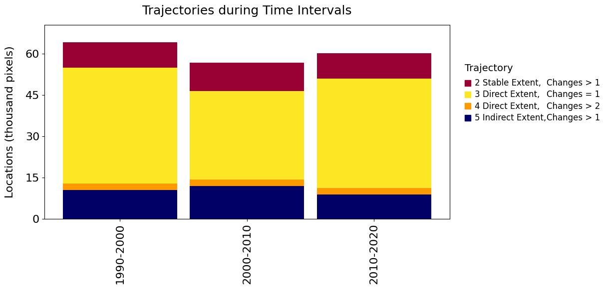
This chart shows the size of change during each of the 3 annual time intervals, segmented by trajectory. Among all the segments, trajectory 3 during 1990-2000 has the most change with 42.2 thousand pixels.
Figure saved to: /content/drive/MyDrive/Events/2026CGA/workshop/dataset/quest_output_2/charts/chart_trajectory_time_interval.png# @title 5.4.2 Plot default trajectory overall
summary = _plot_stacked_overall_bar_chart(
output_dir=output_path,
csv_filename="trajectory_total_changes.csv",
index_col="Trajectory_Class",
value_col="Total_Changes",
title="Trajectories Overall",
legend_title="Trajectory",
output_png_name="chart_trajectory_overall_default.png",
color_mode="fixed",
fixed_colors={
5: "#000066",
4: "#ff9900",
3: "#FDE724",
2: "#990033",
1: "#d9d9d9",
},
category_order=[5, 4, 3, 2, 1],
y_axis_mode="pixel_count",
y_label_base="Change",
legend_mode="computed",
legend_labels={
2: "2 Stable Extent, Changes > 2",
3: "3 Direct Extent, Changes = 1",
4: "4 Direct Extent, Changes > 2",
5: "5 Indirect Extent, Changes > 1",
},
)
top_label_clean = " ".join(summary["top_label"].split())
top_description = top_label_clean.split(" ", 1)[1]
display(
Markdown(
f"*This chart shows the number of changes, summed over all "
f"time intervals, grouped by the trajectory where the changes "
f"occurred. Trajectory {summary['top_category']} contains the "
f"most change, totaling {summary['top_value_display']} "
f"changes, which is {summary['top_share']:.1f}% of the "
f"{summary['total_value_display']} overall changes.*"
)
)
print(f"Chart saved to: {summary['out_fig_path']}")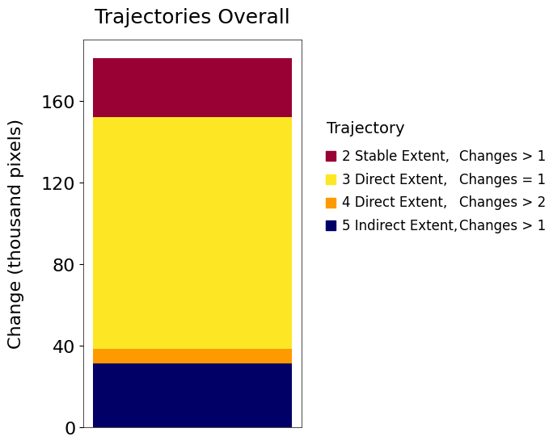
This chart shows the number of changes, summed over all time intervals, grouped by the trajectory where the changes occurred. Trajectory 3 contains the most change, totaling 114.1 thousand pixels changes, which is 63.0% of the 181.2 thousand pixels overall changes.
Chart saved to: /content/drive/MyDrive/Events/2026CGA/workshop/dataset/quest_output_2/charts/chart_trajectory_overall_default.png# @title 5.4.3 Plot the percentage of the study area with trajectories
summary = _plot_stacked_overall_bar_chart(
output_dir=output_path,
csv_filename="trajectory_distribution_percentage.csv",
key_col="Trajectory",
value_col="Percentage",
title="Trajectories Overall",
legend_title="Trajectory",
output_png_name="chart_trajectory_percentage_overall.png",
color_mode="fixed",
fixed_colors={
5: "#000066",
4: "#ff9900",
3: "#FDE724",
2: "#990033",
},
category_order=[5, 4, 3, 2],
y_axis_mode="percentage",
y_label_fixed="Locations (% of study area)",
legend_mode="fixed_list",
legend_categories=[2, 3, 4, 5],
legend_labels={
2: "2 Stable Extent, Changes > 2",
3: "3 Direct Extent, Changes = 1",
4: "4 Direct Extent, Changes > 2",
5: "5 Indirect Extent, Changes > 1",
},
)
trajectory_breakdown = ", ".join(
f"Trajectory {value} covers {summary['values'].get(value, 0):.1f}%"
for value in [2, 3, 4, 5]
)
display(
Markdown(
f"*This chart shows how much of the total study area, not just "
f"the area that changed, each trajectory pattern covers. "
f"{trajectory_breakdown}.*"
)
)
print(f"Chart saved to: {summary['out_fig_path']}")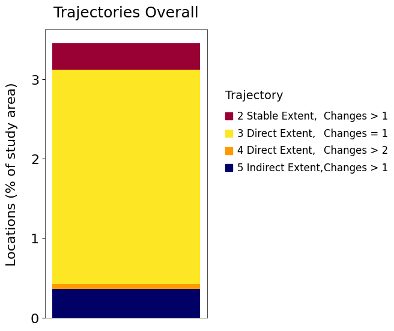
This chart shows how much of the total study area, not just the area that changed, each trajectory pattern covers. Trajectory 2 covers 0.3%, Trajectory 3 covers 2.7%, Trajectory 4 covers 0.1%, Trajectory 5 covers 0.4%.
Chart saved to: /content/drive/MyDrive/Events/2026CGA/workshop/dataset/quest_output_2/charts/chart_trajectory_percentage_overall.png# @title 5.4.4 Plot location of trajectories
summary = _plot_stacked_overall_bar_chart(
output_dir=output_path,
csv_filename="trajectory_distribution_location.csv",
key_col="Trajectory",
value_col="Pixels",
title="Trajectories Overall",
legend_title="Trajectory",
output_png_name="chart_trajectory_location_overall.png",
color_mode="fixed",
fixed_colors={
5: "#000066",
4: "#ff9900",
3: "#FDE724",
2: "#990033",
},
category_order=[5, 4, 3, 2],
y_axis_mode="pixel_count",
y_label_base="Locations",
legend_mode="fixed_list",
legend_categories=[2, 3, 4, 5],
legend_labels={
2: "2 Stable Extent, Changes > 2",
3: "3 Direct Extent, Changes = 1",
4: "4 Direct Extent, Changes > 2",
5: "5 Indirect Extent, Changes > 1",
},
)
trajectory_breakdown = ", ".join(
f"Trajectory {value} covers "
f"{summary['values'].get(value, 0) / summary['scale_factor']:.1f} "
f"{summary['unit_label']}"
for value in [2, 3, 4, 5]
)
display(
Markdown(
f"*This chart shows how many distinct locations follow each "
f"trajectory pattern, counting each location once. "
f"{trajectory_breakdown}.*"
)
)
print(f"Chart saved to: {summary['out_fig_path']}")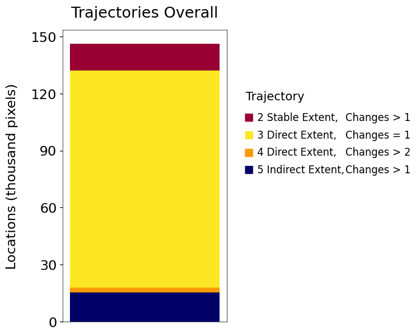
This chart shows how many distinct locations follow each trajectory pattern, counting each location once. Trajectory 2 covers 14.2 thousand pixels, Trajectory 3 covers 114.1 thousand pixels, Trajectory 4 covers 2.4 thousand pixels, Trajectory 5 covers 15.4 thousand pixels.
Chart saved to: /content/drive/MyDrive/Events/2026CGA/workshop/dataset/quest_output_2/charts/chart_trajectory_location_overall.png# @title 5.4.5 Plot trajectory map
summary = _plot_discrete_raster_map(
output_dir=output_path,
raster_filename="trajectory.tif",
title="Trajectories",
legend_title="Trajectory",
output_png_name="map_trajectories.png",
color_mode="fixed",
fixed_colors=[
"#d9d9d9", # Trajectory 1
"#990033", # Trajectory 2
"#FDE725", # Trajectory 3
"#ff9900", # Trajectory 4
"#000066", # Trajectory 5
],
fixed_labels=[
"1 Stable Extent, Changes = 0",
"2 Stable Extent, Changes > 2",
"3 Direct Extent, Changes = 1",
"4 Direct Extent, Changes > 2",
"5 Indirect Extent, Changes > 1",
],
legend_patch_edgecolor="black",
legend_extra_kwargs={
"bbox_to_anchor": (1.02, 0.5),
"borderpad": 1.2,
"handletextpad": 0.8,
"columnspacing": 2,
"labelspacing": 0.8,
},
title_pad=8,
no_change_value=1,
)
dominant_label_clean = " ".join(summary["dominant_label"].split())
shares_by_value = {v["value"]: (label, v) for label, v in summary["value_shares"].items()}
no_change_pct = (
shares_by_value[1][1]["pixel_count"] / summary["total_valid_pixels"] * 100
if 1 in shares_by_value and summary["total_valid_pixels"] > 0
else 0.0
)
trajectory_breakdown = ", ".join(
f"Trajectory {value} accounts for {stats['share_of_changed']:.1f}%"
for value, (label, stats) in sorted(shares_by_value.items())
if value != 1
)
display(
Markdown(
f"*This map shows five trajectories as specified in the "
f"legend. Trajectory 1 shows locations that never changed. "
f"Trajectory 2 shows locations where the begin class matches "
f"the end class and change exists. Trajectory 3 shows "
f"locations that changed exactly once from the begin class "
f"directly to the end class. Trajectory 4 shows locations "
f"where a time interval has a transition from the begin class "
f"directly to the end class and has additional changes. "
f"Trajectory 5 shows locations where the begin class changes "
f"indirectly to the end class by shifting through at least "
f"one intermediate class.*"
)
)
print(f"Map figure saved successfully to: {summary['out_fig_path']}")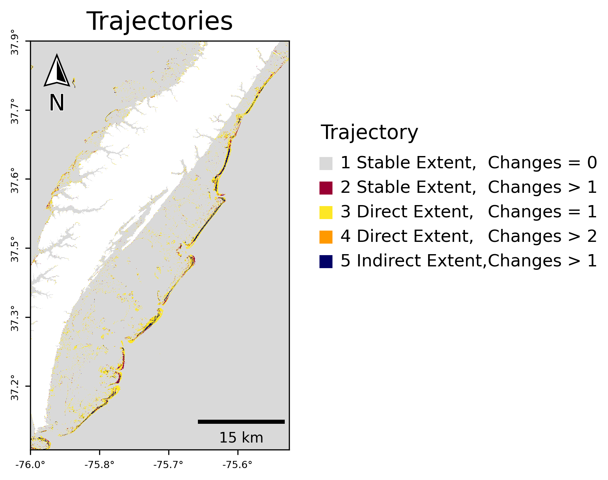
This map shows five trajectories as specified in the legend. Trajectory 1 shows locations that never changed. Trajectory 2 shows locations where the begin class matches the end class and change exists. Trajectory 3 shows locations that changed exactly once from the begin class directly to the end class. Trajectory 4 shows locations where a time interval has a transition from the begin class directly to the end class and has additional changes. Trajectory 5 shows locations where the begin class changes indirectly to the end class by shifting through at least one intermediate class.
Map figure saved successfully to: /content/drive/MyDrive/Events/2026CGA/workshop/dataset/quest_output_2/maps/map_trajectories.png5.5 Change component heatmaps and charts
5.5.1 Plot heatmaps
# @title 5.5.1.1 Plot change components heatmaps
# 1. Define visual style configuration
# Adjust the values below to customize the appearance of all 7 heatmaps.
style_config = {
# Font size for the class names on the X-axis (bottom)
"tick_fontsize_x": 10,
# Font size for the class names on the Y-axis (left)
"tick_fontsize_y": 10,
# Font size for the axis labels ("To class", "Begin class", etc.)
"axis_label_fontsize": 10,
# Font size for the main title of the heatmap
"title_fontsize": 12,
# Colormap for positive values (default is Yellow-Orange-Red: "YlOrRd")
"cmap": "YlOrRd",
# Base size of each cell in inches (controls the overall figure size)
"cell_size_inch": 0.8,
# Auto color scale bounds
"vmin": 0.0,
"vmax": None,
}
print(
"Generating Heatmaps...",
)
# Identify the maximum value of the diagonal of the "Allocation Exchange" (all_exc) matrix
global_diag_vmax = float(np.diag(matrices["all_exc"].values).max())
# Identify the maximum off-diagonal value of the "Allocation Exchange" (all_exc) matrix
# to standardize the color scale across all matrices.
all_exc_vals = matrices["all_exc"].values.astype(float).copy()
np.fill_diagonal(all_exc_vals, 0.0)
global_off_diag_vmax = float(np.nanmax(all_exc_vals))
if global_off_diag_vmax <= 0.0:
global_off_diag_vmax = 1.0
# Update style_config to apply the global scale
style_config["vmax"] = global_off_diag_vmax
# Calculate a uniform font size based on the "Time Intervals" (sum) matrix to prevent overflow
sum_matrix_vals = matrices["sum"].values
max_digits = 0
for i in range(sum_matrix_vals.shape[0]):
for j in range(sum_matrix_vals.shape[1]):
val = float(sum_matrix_vals[i, j])
if not np.isnan(val):
num_digits = len(f"{int(round(val))}")
if num_digits > max_digits:
max_digits = num_digits
base_fs = 20.0 # base annotation font size
if max_digits > 3:
scale_factor = max(0.4, 3.0 / max_digits)
global_ann_fontsize = max(5.0, base_fs * scale_factor)
else:
global_ann_fontsize = base_fs
style_config["ann_fontsize"] = global_ann_fontsize
# 2. Iterate and plot each heatmap
for key, meta in MATRIX_META.items():
suffix = meta[0]
title_part = meta[1]
m_type = meta[2]
df_to_plot = matrices[key]
is_flow = m_type == "flow"
label_suffix = "..." if is_flow else "-"
full_title = f"{title_part} {str_y0}{label_suffix}{str_y1}"
save_fig_path = os.path.join(
output_path,
"charts",
f"heatmap_{suffix}_{interval_str}.png",
)
x_label = "To class" if is_flow else "End class"
y_label = "From class" if is_flow else "Begin class"
is_extent = (key == "ext")
white_cells = []
plot_heatmap(
df=df_to_plot,
title=full_title,
save_path=save_fig_path,
xlabel=x_label,
ylabel=y_label,
show_diagonal_values=True,
equalize_diagonal_font=is_extent,
white_cells=white_cells,
diag_vmax=global_diag_vmax,
**style_config,
)
class_names = label_id_to_name(df_to_plot.index)
if key == "all_exc":
vals = df_to_plot.values.astype(float).copy()
np.fill_diagonal(vals, 0)
max_idx = np.unravel_index(np.argmax(vals), vals.shape)
top_pair_value = vals[max_idx]
top_class_a = class_names[max_idx[0]]
top_class_b = class_names[max_idx[1]]
display(
Markdown(
f"*This heatmap shows Allocation Exchange, the spatial "
f"reallocation between the start and end time point "
f"where one class gains from a second class in some "
f"locations while the second class gains from the "
f"first class in other locations. It is symmetric by "
f"definition, so the value for any pair of classes is "
f"the same in both directions. The largest Allocation Exchange is "
f"between {top_class_a} and {top_class_b}, "
f"{top_pair_value:,.0f} pixels moving in each "
f"direction.*"
)
)
elif key == "qty_shift":
vals = df_to_plot.values.astype(float)
max_idx = np.unravel_index(np.argmax(vals), vals.shape)
top_value = vals[max_idx]
top_class_from = class_names[max_idx[0]]
top_class_to = class_names[max_idx[1]]
display(
Markdown(
f"*This heatmap shows Quantity and Allocation Shift "
f"combined, the extent transitions between the start "
f"and end time point that remain after removing "
f"Allocation Exchange, the paired, symmetric part of "
f"change shown in the previous heatmap. It captures "
f"both net class size change and one-directional "
f"reallocation through a third class, which cannot be "
f"separated at the level of an individual class pair. "
f"Unlike Allocation Exchange, this matrix is not "
f"symmetric. The largest single transition is from "
f"{top_class_from} to {top_class_to}, "
f"{top_value:,.0f} pixels.*"
)
)
elif key == "sum":
vals = df_to_plot.values.astype(float).copy()
np.fill_diagonal(vals, 0)
max_idx = np.unravel_index(np.argmax(vals), vals.shape)
top_value = vals[max_idx]
top_class_from = class_names[max_idx[0]]
top_class_to = class_names[max_idx[1]]
display(
Markdown(
f"*This heatmap shows Time Intervals, the total number "
f"of class transitions recorded at every step of the "
f"time series, summed across every pixel. It equals "
f"the sum of the five change components, Allocation "
f"Exchange, Quantity and Allocation Shift, Alternation "
f"Exchange, and Alternation Shift, minus Indirect "
f"extent. The largest single transition is from "
f"{top_class_from} to {top_class_to}, {top_value:,.0f} "
f"pixels.*"
)
)
elif key == "alt_exc":
vals = df_to_plot.values.astype(float).copy()
np.fill_diagonal(vals, 0)
max_idx = np.unravel_index(np.argmax(vals), vals.shape)
top_value = vals[max_idx]
top_class_a = class_names[max_idx[0]]
top_class_b = class_names[max_idx[1]]
display(
Markdown(
f"*This heatmap shows Alternation Exchange, transitions "
f"between a pair of classes that were later reversed "
f"at the same location, tracked across the full time "
f"series rather than just the start and end. It is "
f"symmetric by definition, so the value for any pair "
f"of classes is the same in both directions. The "
f"largest Alternation Exchange is between "
f"{top_class_a} and {top_class_b}, {top_value:,.0f} "
f"pixels.*"
)
)
elif key == "alt_shift":
vals = df_to_plot.values.astype(float).copy()
np.fill_diagonal(vals, 0)
max_idx = np.unravel_index(np.argmax(vals), vals.shape)
top_value = vals[max_idx]
top_class_from = class_names[max_idx[0]]
top_class_to = class_names[max_idx[1]]
display(
Markdown(
f"*This heatmap shows Alternation Shift, transitions "
f"during the time series that pass through a "
f"different class rather than settling directly into "
f"the pixel's final class or reversing back into a "
f"class it had already left, tracked across the full "
f"time series at the same location. Unlike Alternation "
f"Exchange, this matrix is not symmetric. For a given "
f"start and end class in the Indirect heatmap shown "
f"earlier, the intermediate class can be inferred here "
f"by finding a third class whose values in the start "
f"class's row and the end class's column are close in "
f"size to that pair's total in the Indirect heatmap. "
f"The largest Alternation Shift is from "
f"{top_class_from} to {top_class_to}, {top_value:,.0f} "
f"pixels.*"
)
)
elif key == "ext":
vals = df_to_plot.values.astype(float).copy()
np.fill_diagonal(vals, 0)
max_idx = np.unravel_index(np.argmax(vals), vals.shape)
top_value = vals[max_idx]
top_class_from = class_names[max_idx[0]]
top_class_to = class_names[max_idx[1]]
display(
Markdown(
f"*This heatmap shows Extent transitions from the "
f"begin time point to the end time point, ignoring "
f"intermediate time intervals. This Extent matrix is "
f"the sum of the Allocation Exchange matrix and the "
f"Quantity & Allocation Shift matrix. The transition "
f"from {top_class_from} to {top_class_to} is the "
f"largest with {top_value:,.0f} locations.*"
)
)
elif key == "unacc_ext":
vals = df_to_plot.values.astype(float)
max_idx = np.unravel_index(np.argmax(vals), vals.shape)
top_value = vals[max_idx]
top_class_from = class_names[max_idx[0]]
top_class_to = class_names[max_idx[1]]
display(
Markdown(
f"*This heatmap shows Indirect transitions during the "
f"temporal extent. These are at locations where the "
f"transition during the temporal extent does not "
f"exist during any single time interval. The location "
f"passes through intermediate class(es), which this "
f"Indirect matrix does not show. The intermediate "
f"classes can be inferred by checking which classes "
f"have large values in the Alternation Shift heatmap. "
f"The transition from {top_class_from} to "
f"{top_class_to} is the largest with "
f"{top_value:,.0f} locations.*"
)
)
final_out_dir = os.path.join(
output_path,
"charts",
)
print(
f"All heatmaps saved to: {final_out_dir}",
)Generating Heatmaps...
This heatmap shows Allocation Exchange, the spatial reallocation between the start and end time point where one class gains from a second class in some locations while the second class gains from the first class in other locations. It is symmetric by definition, so the value for any pair of classes is the same in both directions. The largest Allocation Exchange is between Beach and Water, 21,480 pixels moving in each direction.
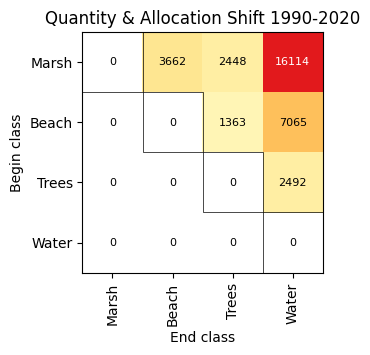
This heatmap shows Quantity and Allocation Shift combined, the extent transitions between the start and end time point that remain after removing Allocation Exchange, the paired, symmetric part of change shown in the previous heatmap. It captures both net class size change and one-directional reallocation through a third class, which cannot be separated at the level of an individual class pair. Unlike Allocation Exchange, this matrix is not symmetric. The largest single transition is from Marsh to Water, 16,114 pixels.
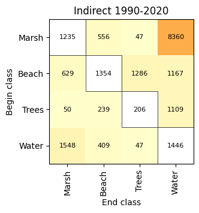
This heatmap shows Indirect transitions during the temporal extent. These are at locations where the transition during the temporal extent does not exist during any single time interval. The location passes through intermediate class(es), which this Indirect matrix does not show. The intermediate classes can be inferred by checking which classes have large values in the Alternation Shift heatmap. The transition from Marsh to Water is the largest with 8,360 locations.
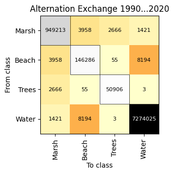
This heatmap shows Alternation Exchange, transitions between a pair of classes that were later reversed at the same location, tracked across the full time series rather than just the start and end. It is symmetric by definition, so the value for any pair of classes is the same in both directions. The largest Alternation Exchange is between Beach and Water, 8,194 pixels.

This heatmap shows Alternation Shift, transitions during the time series that pass through a different class rather than settling directly into the pixel’s final class or reversing back into a class it had already left, tracked across the full time series at the same location. Unlike Alternation Exchange, this matrix is not symmetric. For a given start and end class in the Indirect heatmap shown earlier, the intermediate class can be inferred here by finding a third class whose values in the start class’s row and the end class’s column are close in size to that pair’s total in the Indirect heatmap. The largest Alternation Shift is from Beach to Water, 8,926 pixels.
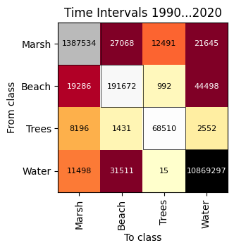
This heatmap shows Time Intervals, the total number of class transitions recorded at every step of the time series, summed across every pixel. It equals the sum of the five change components, Allocation Exchange, Quantity and Allocation Shift, Alternation Exchange, and Alternation Shift, minus Indirect extent. The largest single transition is from Beach to Water, 44,498 pixels.

This heatmap shows Extent transitions from the begin time point to the end time point, ignoring intermediate time intervals. This Extent matrix is the sum of the Allocation Exchange matrix and the Quantity & Allocation Shift matrix. The transition from Beach to Water is the largest with 28,545 locations.
All heatmaps saved to: /content/drive/MyDrive/Events/2026CGA/workshop/dataset/quest_output_2/charts# @title 5.5.1.2 Plot indirect ratio heatmap
str_y0 = _extract_year_str(years[0])
str_y1 = _extract_year_str(years[-1])
interval_str = f"{str_y0}-{str_y1}"
# 1. Load the ratio matrix from the previously generated CSV
csv_filename = f"transition_matrix_indirect_ratio_{interval_str}.csv"
csv_path_ratio = os.path.join(
output_path,
"tables",
csv_filename,
)
df_unaccounted_ratio = pd.read_csv(
csv_path_ratio,
index_col=0,
)
# Convert index/columns back to string for consistency
df_unaccounted_ratio.index = df_unaccounted_ratio.index.map(
str,
)
df_unaccounted_ratio.columns = df_unaccounted_ratio.columns.map(
str,
)
# Reorder based on the sum matrix order (to keep it consistent with other maps)
if "sum" in matrices:
order_labels = list(
matrices["sum"].index,
)
df_unaccounted_ratio = df_unaccounted_ratio.reindex(
index=order_labels,
columns=order_labels,
)
# 2. Plot the heatmap using formatting from the no-legend panel
chart_filename = f"heatmap_indirect_ratio_{interval_str}.png"
chart_path_ratio = os.path.join(
output_path,
"charts",
chart_filename,
)
# Fixed 0-100% color scale: darkest blue always represents 100%,
# regardless of the actual maximum value present in this interval's
# data, so the color intensity is comparable across different runs.
white_to_blue_cmap = LinearSegmentedColormap.from_list(
"white_to_blue",
["#FFFFFF", "#08306B"],
)
plot_heatmap(
df=df_unaccounted_ratio,
title=f"% Indirect/Extent {interval_str}",
save_path=chart_path_ratio,
xlabel="End class",
ylabel="Begin class",
show_diagonal_values=True,
equalize_diagonal_font=True,
white_cells=[],
vmin=0.0,
vmax=100.0,
diag_vmax=100.0,
ann_fontsize=global_ann_fontsize, # Uses global font size computed before
tick_fontsize_x=10,
tick_fontsize_y=10,
axis_label_fontsize=10,
title_fontsize=12,
cmap=white_to_blue_cmap,
cell_size_inch=0.8,
)
vals = df_unaccounted_ratio.values.astype(float)
full_hundred_mask = np.isclose(vals, 100.0)
n_full_hundred = int(np.sum(full_hundred_mask))
caption_text = (
"This heatmap shows each Indirect entry as a percent of the "
"corresponding Extent entry. The color scale is fixed from 0 to "
"100%, white to dark blue, regardless of the values present. A "
"blank cell means no Extent transition was observed for that "
"entry, so the percent is undefined rather than zero."
)
if n_full_hundred > 0:
ext_vals = matrices["ext"].reindex(
index=df_unaccounted_ratio.index,
columns=df_unaccounted_ratio.columns,
).values.astype(float)
max_ext_among_hundred = int(np.nanmax(ext_vals[full_hundred_mask]))
caption_text += (
f" {n_full_hundred} entries have 100%. Among those "
f"{n_full_hundred} entries, the maximum value in the Extent "
f"matrix is {max_ext_among_hundred}."
)
display(Markdown(f"*{caption_text}*"))
print(f"Plot saved to: {chart_path_ratio}",)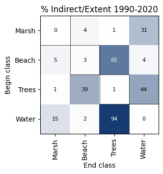
This heatmap shows each Indirect entry as a percent of the corresponding Extent entry. The color scale is fixed from 0 to 100%, white to dark blue, regardless of the values present. A blank cell means no Extent transition was observed for that entry, so the percent is undefined rather than zero.
Plot saved to: /content/drive/MyDrive/Events/2026CGA/workshop/dataset/quest_output_2/charts/heatmap_indirect_ratio_1990-2020.png# @title 5.5.1.3 Execute heatmap panel plot
# Execute
create_heatmap_panel(
output_dir=output_path,
interval=interval_str,
)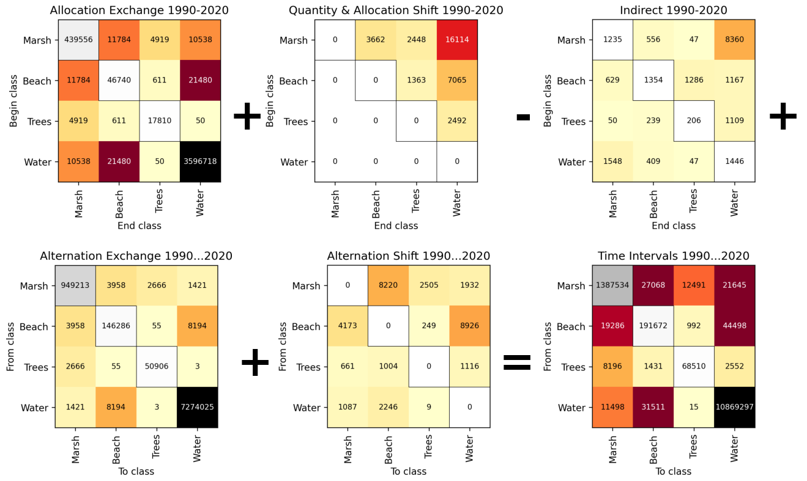
This panel shows how the five change components add up exactly. Top row: Allocation Exchange plus Quantity and Allocation Shift, minus Indirect. Bottom row: plus Alternation Exchange, plus Alternation Shift, equals Time Intervals, the total shown in the last panel. Each individual heatmap has its own caption above, with the largest transition for that specific component.
Change component heatmap panel saved to: /content/drive/MyDrive/Events/2026CGA/workshop/dataset/quest_output_2/charts/heatmap_panel_1990-2020.png# @title 5.5.1.4 Plot trajectory heatmaps
# Plot the 5 trajectory matrices (Pontius's "additional budget"),
# reusing the exact same style_config and diag_vmax as the 7 heatmaps
# in Section 5.5.1, so the color scale is directly comparable to the
# Time Intervals heatmap.
print(
"Generating trajectory heatmaps...",
)
for traj in range(1, 6):
df_to_plot = matrices[f"traj_{traj}"]
full_title = f"Trajectory {traj} {str_y0}...{str_y1}"
save_fig_path = os.path.join(
output_path,
"charts",
f"heatmap_trajectory_{traj}_{interval_str}.png",
)
plot_heatmap(
df=df_to_plot,
title=full_title,
save_path=save_fig_path,
xlabel="To class",
ylabel="From class",
show_diagonal_values=True,
equalize_diagonal_font=False,
white_cells=[],
diag_vmax=global_diag_vmax,
**style_config,
)
final_out_dir = os.path.join(
output_path,
"charts",
)
print(
f"All trajectory heatmaps saved to: {final_out_dir}",
)Generating trajectory heatmaps...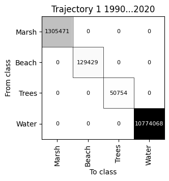
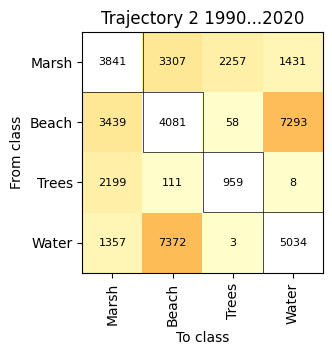
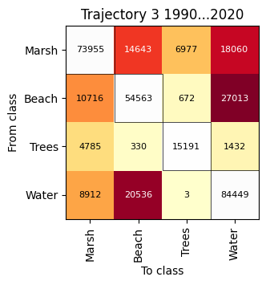
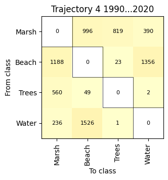
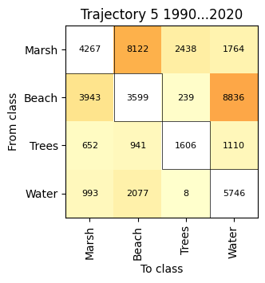
All trajectory heatmaps saved to: /content/drive/MyDrive/Events/2026CGA/workshop/dataset/quest_output_2/charts# @title 5.5.1.5 Execute trajectory heatmap panel plot
create_trajectory_heatmap_panel(
output_dir=output_path,
interval=interval_str,
)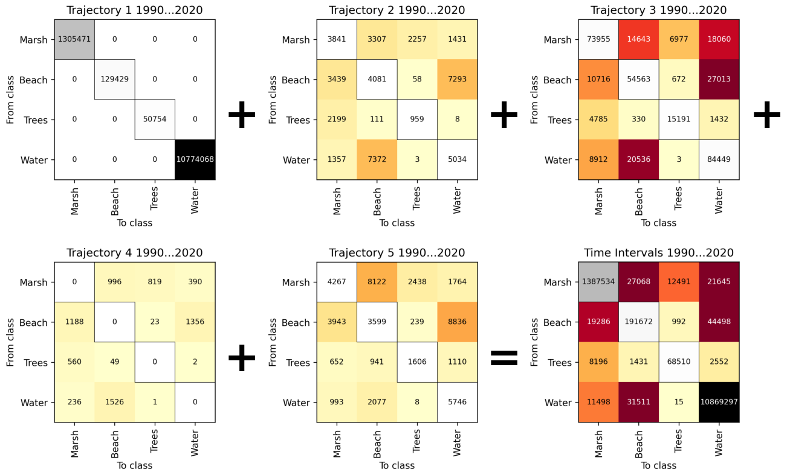
Trajectory heatmap panel saved to: /content/drive/MyDrive/Events/2026CGA/workshop/dataset/quest_output_2/charts/heatmap_trajectory_panel_1990-2020.png5.5.2 Plot change components charts
# @title 5.5.2.1 Plot change components during time intervals
plot_change_components_time_interval(
output_path=output_path,
)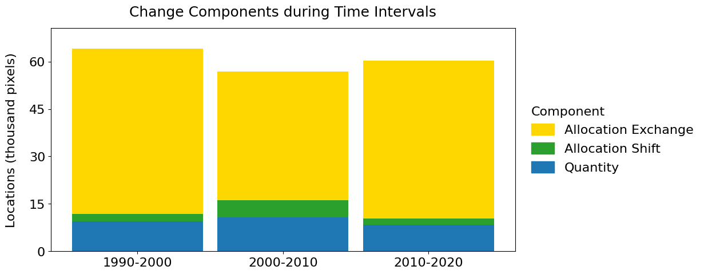
This chart shows the size of change during each of the 3 annual time intervals, segmented by component during each time interval. Quantity conveys the absolute net change of each class during each time interval. Allocation Shift and Allocation Exchange are spatial allocation differences during each time interval. Exchange occurs when pairs of classes transition with each other. Shift is change that is neither Quantity nor Exchange. Allocation Exchange during 1990-2000 is the segment that accounts for the most change, with 52.4 (thousand pixels).
Chart saved to: /content/drive/MyDrive/Events/2026CGA/workshop/dataset/quest_output_2/charts/chart_change_components_time_interval.png# @title 5.5.2.2 Execute overall change component plot
# 10. Specify paths and execute the plotting function
summary_csv_path = os.path.join(
output_path,
"tables",
"change_components_overall_summary.csv"
)
plot_overall_change_components(
summary_csv_path=summary_csv_path,
output_path=output_path,
)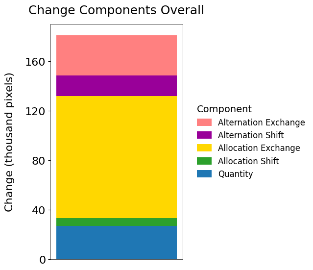
This chart shows the total change across the time extent, split into five components. Quantity is the net change in the total size of each class. Allocation Exchange and Allocation Shift are spatial reallocation between the starting and ending time point, Exchange when two classes trade directly with each other, Shift when a class’s location changes by passing through a third class. Alternation Exchange and Alternation Shift are the same two patterns, but occurring repeatedly at the same location across the time series rather than once. Allocation Exchange accounts for the largest share, 54.5% of the 181.2 (thousand pixels) of total change.
Chart saved to: /content/drive/MyDrive/Events/2026CGA/workshop/dataset/quest_output_2/charts/chart_change_components_overall.png# @title 5.5.2.3 Execute change components by class plot
# 8. Execution
csv_path = os.path.join(
output_path,
"tables",
"change_components.csv",
)
df = pd.read_csv(
csv_path,
)
ComponentVisualizer.plot_gain_loss_stacked(
df=df,
class_labels_dict=class_labels_dict,
title="Change Components by Class",
output_path=output_path,
)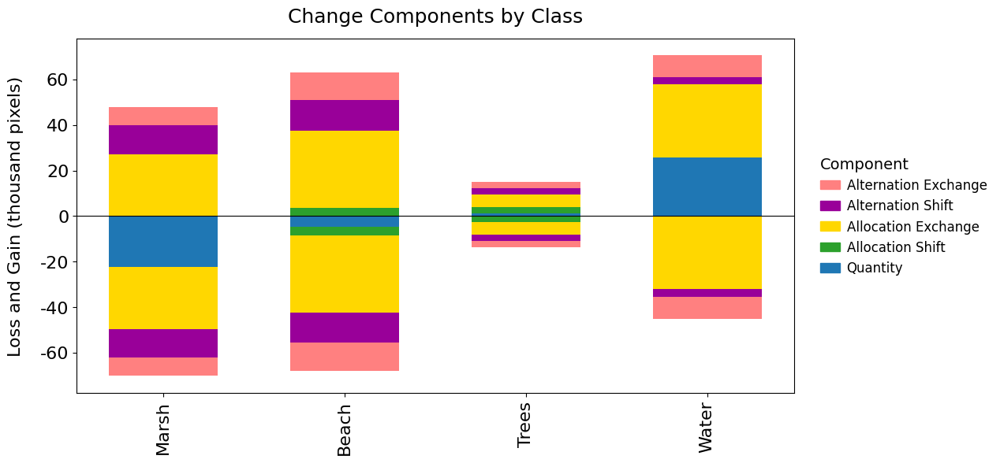
This chart shows the gross loss and gross gain of each class, summed over all time intervals, grouped into five components.
Chart saved to: /content/drive/MyDrive/Events/2026CGA/workshop/dataset/quest_output_2/charts/chart_change_component_change_class.png5.6 Change component maps
# @title 5.6.1 Plot extent change map
summary = _plot_discrete_raster_map(
output_dir=output_path,
raster_filename="map_extent.tif",
title="Extent Change",
legend_title="Change",
output_png_name="map_extent_change.png",
nodata_val=noData_value,
color_mode="gradient",
range_mode="zero",
filter_present_values=False,
legend_extra_kwargs={"bbox_to_anchor": (1.02, 0.5)},
no_change_value=0,
)
extent_change_pct = (
summary["total_changed_pixels"] / summary["total_valid_pixels"] * 100
if summary["total_valid_pixels"] > 0
else 0.0
)
display(
Markdown(
f"*This map shows where a land cover class changed between "
f"the begin and end year of the time series, regardless of "
f"what happened during intermediate time intervals. The begin "
f"class differs from the end class at "
f"{summary['total_changed_pixels']:,} pixels, which is "
f"{extent_change_pct:.1f}% of the "
f"{summary['total_valid_pixels']:,} pixels in the spatial "
f"extent.*"
)
)
print(f"Map figure saved successfully to: {summary['out_fig_path']}")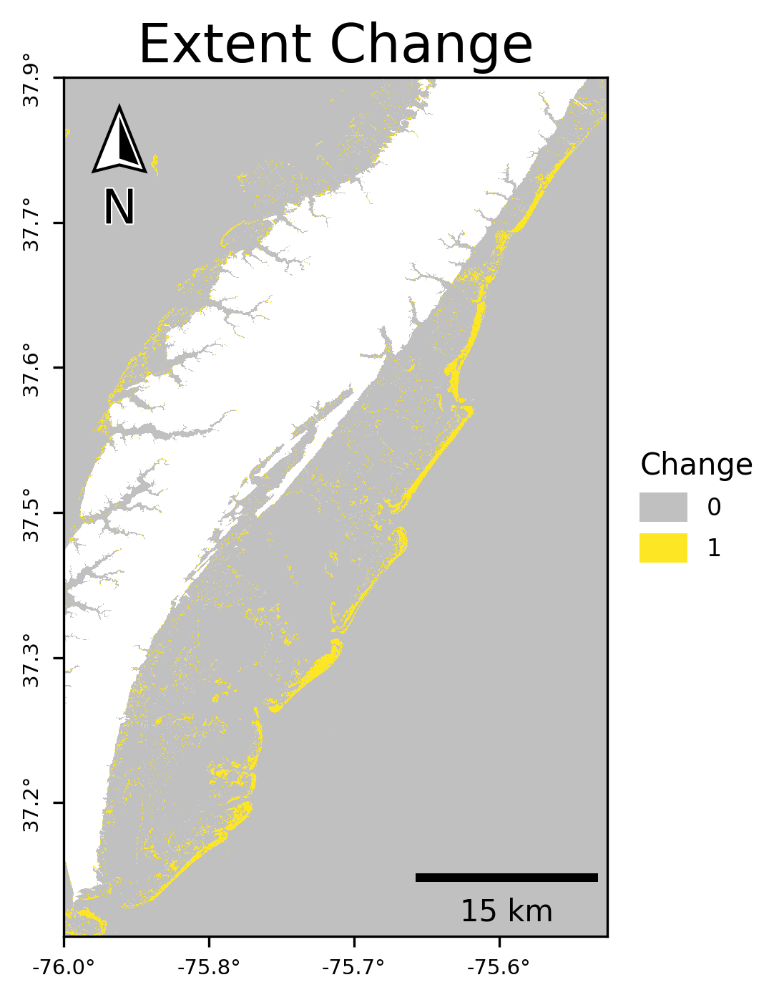
This map shows where a land cover class changed between the begin and end year of the time series, regardless of what happened during intermediate time intervals. The begin class differs from the end class at 131,908 pixels, which is 3.1% of the 4,232,732 pixels in the spatial extent.
Map figure saved successfully to: /content/drive/MyDrive/Events/2026CGA/workshop/dataset/quest_output_2/maps/map_extent_change.png# @title 5.6.2 Plot alternation exchange map
summary = _plot_discrete_raster_map(
output_dir=output_path,
raster_filename="map_alternation_exchange.tif",
title="Alternation Exchange",
legend_title="Exchange",
output_png_name="map_alternation_exchange.png",
nodata_val=noData_value,
color_mode="gradient",
range_mode="zero",
filter_present_values=True,
legend_extra_kwargs={"bbox_to_anchor": (1.02, 0.5)},
no_change_value=0,
)
display(
Markdown(
f"*This map shows Alternation Exchange, which occurs where a "
f"location alternates between a pair of classes. Alternation "
f"exchange occurs in pairs, therefore the values are even. "
f"Alternation exchange occurs at "
f"{summary['total_changed_pixels']:,} of the "
f"{summary['total_valid_pixels']:,} locations in the spatial "
f"extent. The most common positive value is "
f"{summary['dominant_label']}, which accounts for "
f"{summary['dominant_share']:.1f}% of the locations that have "
f"positive alternation exchange. Alternation exchange ranges "
f"from {summary['min_val']} to {summary['max_val']}.*"
)
)
print(f"Map figure saved successfully to: {summary['out_fig_path']}")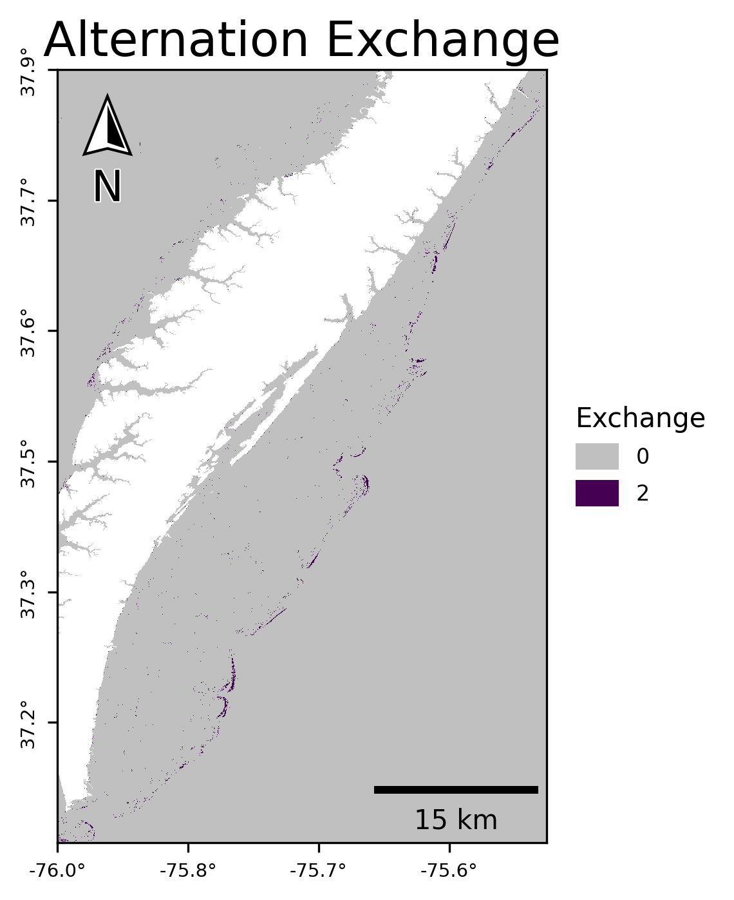
This map shows Alternation Exchange, which occurs where a location alternates between a pair of classes. Alternation exchange occurs in pairs, therefore the values are even. Alternation exchange occurs at 16,297 of the 4,232,732 locations in the spatial extent. The most common positive value is 2, which accounts for 100.0% of the locations that have positive alternation exchange. Alternation exchange ranges from 0 to 2.
Map figure saved successfully to: /content/drive/MyDrive/Events/2026CGA/workshop/dataset/quest_output_2/maps/map_alternation_exchange.png# @title 5.6.3 Plot alternation shift map
summary = _plot_discrete_raster_map(
output_dir=output_path,
raster_filename="map_alternation_shift.tif",
title="Alternation Shift",
legend_title="Shift",
output_png_name="map_alternation_shift.png",
nodata_val=noData_value,
color_mode="gradient",
range_mode="zero",
filter_present_values=True,
legend_extra_kwargs={"bbox_to_anchor": (1.02, 0.5)},
no_change_value=0,
)
display(
Markdown(
f"*This map shows Alternation Shift, which occurs where a "
f"location transitions from its begin class to at least one "
f"intermediate class then to its end class during the time "
f"series. Alternation Shift occurs at "
f"{summary['total_changed_pixels']:,} of the "
f"{summary['total_valid_pixels']:,} locations in the spatial "
f"extent. The most common positive value is "
f"{summary['dominant_label']}, which accounts for "
f"{summary['dominant_share']:.1f}% of the locations that have "
f"positive alternation shift. The count ranges from "
f"{summary['min_val']} to {summary['max_val']}.*"
)
)
print(f"Map figure saved successfully to: {summary['out_fig_path']}")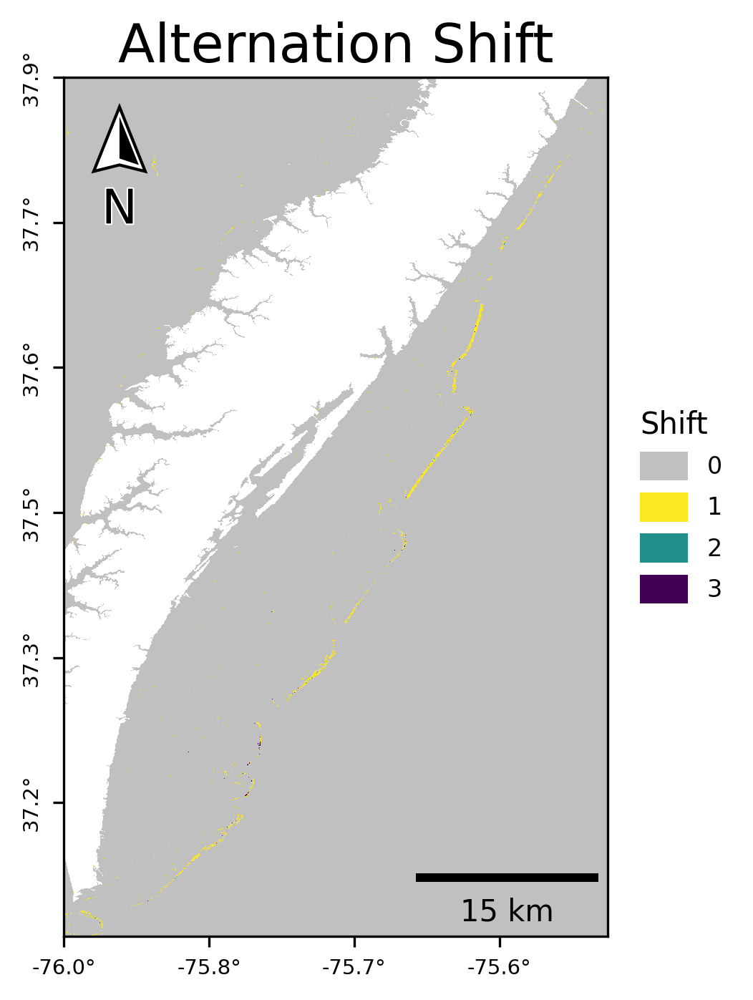
This map shows Alternation Shift, which occurs where a location transitions from its begin class to at least one intermediate class then to its end class during the time series. Alternation Shift occurs at 15,782 of the 4,232,732 locations in the spatial extent. The most common positive value is 1, which accounts for 96.4% of the locations that have positive alternation shift. The count ranges from 0 to 3.
Map figure saved successfully to: /content/drive/MyDrive/Events/2026CGA/workshop/dataset/quest_output_2/maps/map_alternation_shift.png